GeoAI Valparaíso · Phase 2 · Briefing
Building-level physical vulnerability to wildfires for two informal settlements — QP1 (Quilpué, semi-rural hillside) and VM8 (Miraflores Bajo, dense urban) — from 5 cm drone imagery, and a test of whether RoofNet, a satellite-resolution vision-language model, transfers to this domain. All results from real runs on a laptop CPU.
| Product | QP1 | VM8 |
|---|---|---|
| Orthomosaic (DOM), RGB 3-band 8-bit | 5.37 cm/px | 5.42 cm/px |
| DSM (Float32, photogrammetric) | 10.75 cm/px | ~10.85 cm/px |
| DEM / bare earth (Float32) | 50 cm/px | 50 cm/px |
| nDSM = DSM − DEM; DSM & DEM resampled (bilinear) to DOM grid; then < 0 → 0, > 60 m → NaN | 5.37 cm/px | 5.42 cm/px |
| AOI processed | 9,310 × 9,310 px | ~500 × 500 m |
| CRS | EPSG:32719 | EPSG:32719 |
| Structures detected (nDSM > 2 m + morphology) | 907 | 608 |
| LiDAR point cloud (ground/unclassified only — unusable for buildings) | 8.1 pts/m² | 6.5 pts/m² |
.tif rasters, per-roof chips/, model checkpoints and RoofNet
clones are not tracked (see .gitignore); everything needed to reproduce is.
| Metric | QP1 | VM8 |
|---|---|---|
| Total structures (threshold) | 907 | 608 |
| Roofs / vegetation (of total structures) | 872 / 35 | 530 / 78 |
| Zinc claro / zinc oxidado / losa oscura | 12.5% / 14.0% / 73.1% | 9.1% / 32.6% / 55.5% |
| Total zinc (metal) | 26.5% | 41.7% |
| Median nearest-neighbour distance | 2.27 m | 1.52 m |
| Structures with a neighbour < 2 m | 45.3% | 60.0% |
| Roofs scored (v2 rules, veg + shadow removed) | 412 (threshold) / 69 (SAM-fused) | 306 (threshold) |
| Mean vulnerability score / mean roof area | 5.1 · 70.3 m² (thr.) / 5.03 · 47.1 m² (SAM) | 6.09 · 100.6 m² |
| % high vulnerability (alta) | 21.8% (threshold) / 17.4% (SAM-fused) | 39.9% |
Vulnerability score (0–10) = material (zinc oxidized 3 · zinc clear/mixed 2 · slab/unclassified 1) + proximity (edge-to-edge NN < 1.5 m → 3 · 1.5–3 m → 2 · 3–5 m → 1 · > 5 m → 0) + density (neighbours within 15 m: ≥ 5 → 2 · 3–4 → 1) + height (< 3 m → 2 · 3–5 m → 1). Bins: 0–3 low · 4–6 medium · 7–10 high. It mixes exposure with physical vulnerability — a proxy, not a validated risk index.
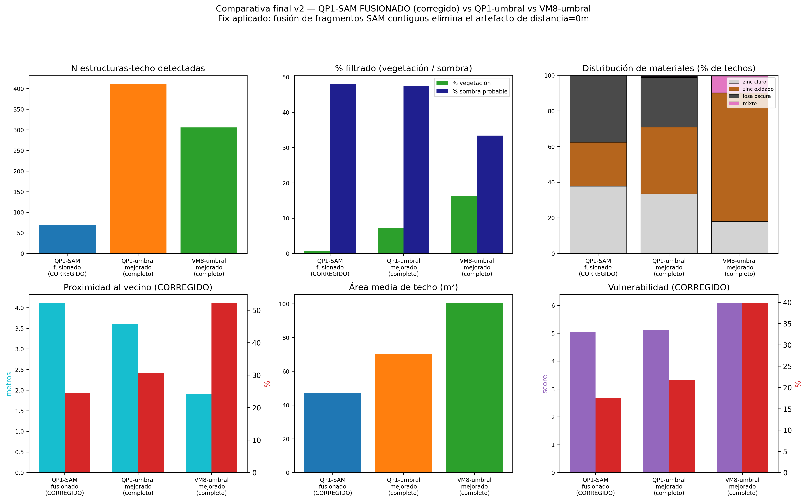
segmentation/figures/comparativa_final_v2.png — three-way method comparison after the SAM fusion fix.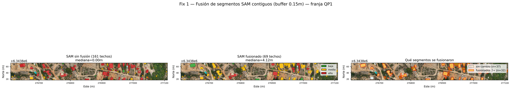
segmentation/figures/comparativa_fusion_QP1.png — SAM fragmentation artifact and its correction.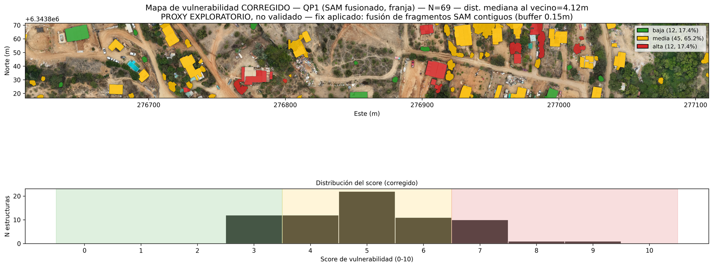
segmentation/figures/mapa_vulnerabilidad_QP1_corregido.png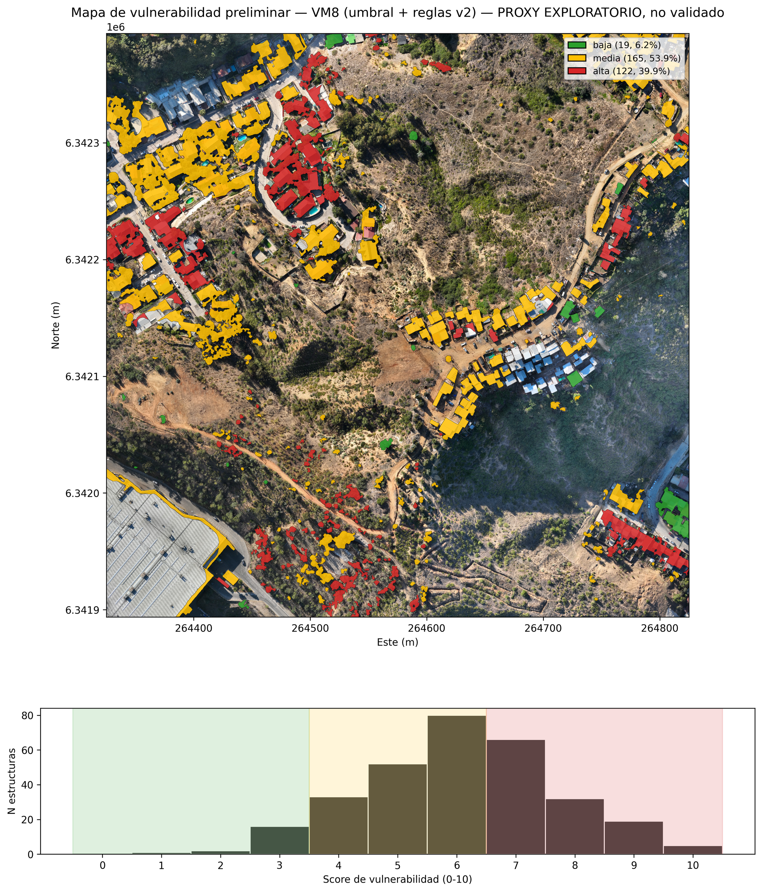
segmentation/figures/mapa_vulnerabilidad_VM8.pngRoofNet's fine-tuned ViT-L/14 head is not publicly retrievable (Kaggle dataset behind an account + xBD non-commercial terms + an anonymised double-blind account). We evaluate the public pieces: RemoteCLIP ViT-L/14 (RoofNet's backbone) and OpenAI CLIP ViT-L/14 (reference). Zero-shot = cosine similarity between the chip and 14 material-class text prompts. CPU cost ≈ 0.75 s / chip / model.
| Model | Top prediction | Classes used | Metal-roof acc. (verified subset) |
|---|---|---|---|
| RemoteCLIP ViT-L/14 | "Thatch" (64/104) | 6 / 14 | 9% (QP1) · 40% (VM8) |
| OpenAI CLIP ViT-L/14 (generic prompts) | Green/Vegetative · Metal Sheet | 7–9 / 14 | 86% (QP1) · 93% (VM8) |
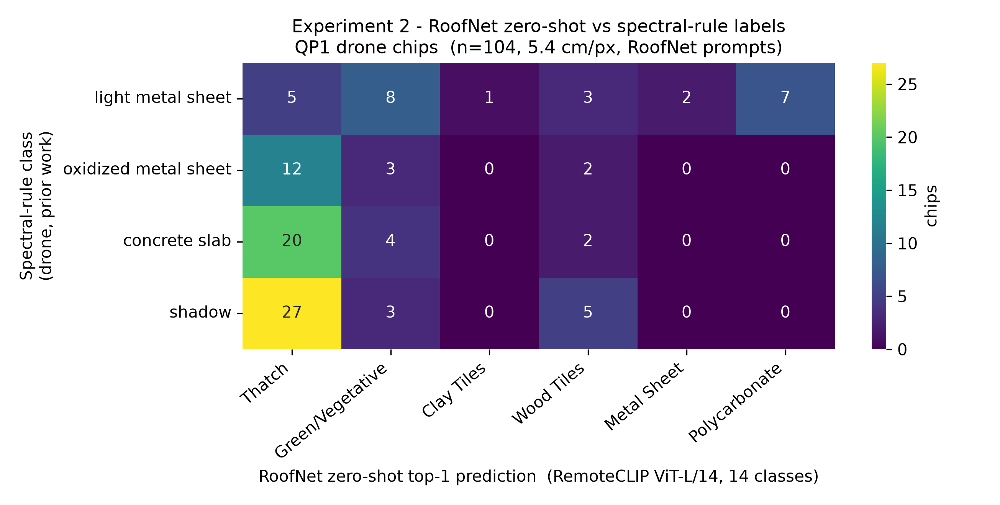
roofnet-eval/figures/confusion_matrix_zeroshot.png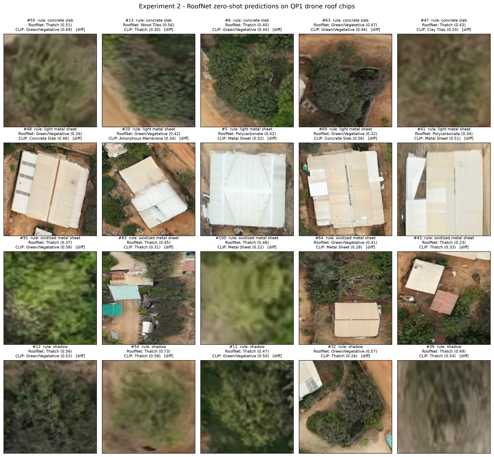
roofnet-eval/figures/grid_predicciones.png| Simulated GSD | RemoteCLIP — label stable vs 5 cm | CLIP — label stable vs 5 cm |
|---|---|---|
| 5.4 cm (native) | 100% | 100% |
| 10 cm | 83% | 75% |
| 30 cm | 66% | 56% |
| 50 cm — ≈ Maxar / RoofNet GSD | 53% | 38% |
| 100 cm | 31% | 12% |
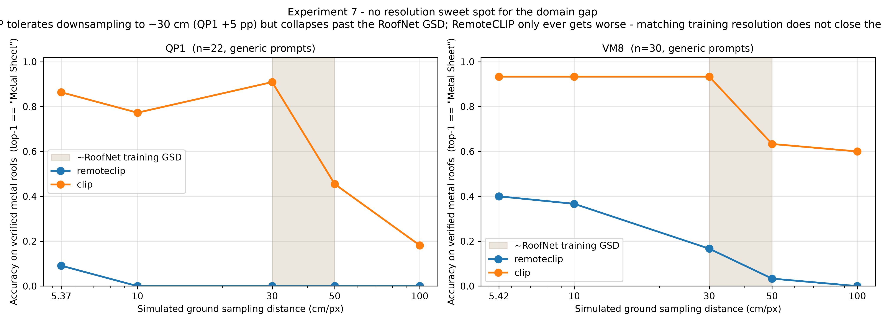
roofnet-eval/figures/domain_gap_resolucion.png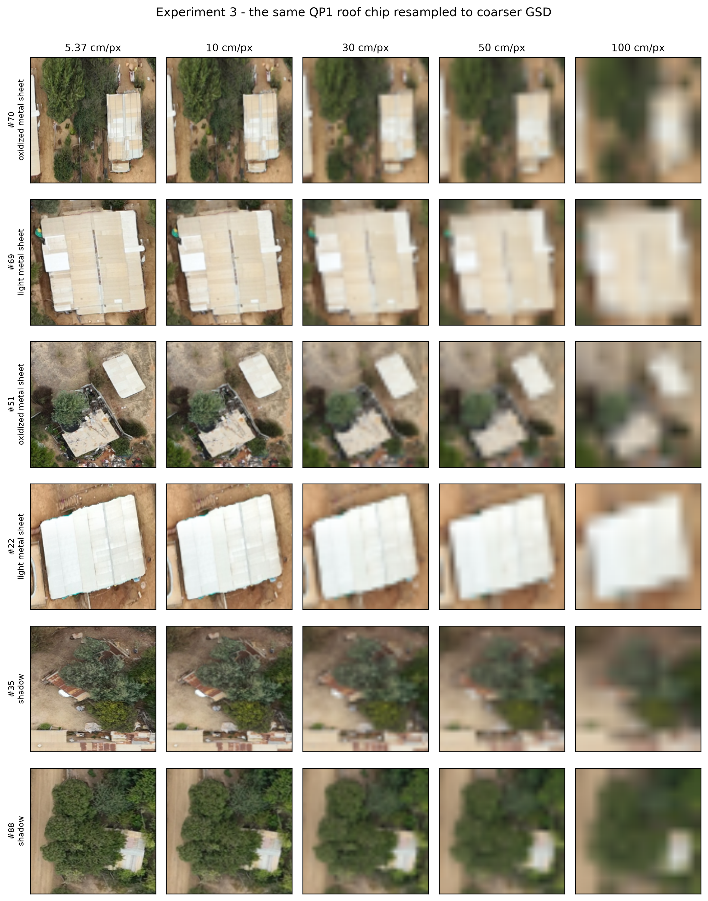
roofnet-eval/figures/degradacion_ejemplos.png| Prompt style | Accuracy |
|---|---|
| generic — "a satellite image of a corrugated metal roof" | 0.86 |
| RoofNet-verbatim descriptions | 0.55 |
| localised — "…in an informal settlement in Chile" | 0.18 |
| detailed — "…hillside campamento in Valparaíso, Chile" | 0.05 |
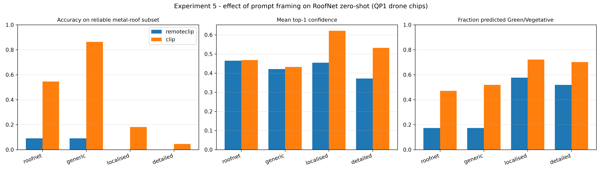
roofnet-eval/figures/prompts_comparativa.png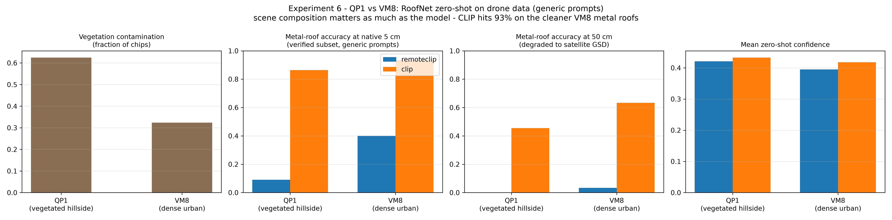
roofnet-eval/figures/comparativa_zonas.png — scene composition matters: CLIP hits 93% on the cleaner VM8.All 215 chips (QP1 104 + VM8 111) labelled independently by Camila (PI), Claudia (RA) and Pablo (additional, less experienced) with an 8-class vocabulary.
| Pair | Cohen's κ | % agreement |
|---|---|---|
| Camila – Claudia | 0.68 — substantial | 73.5% |
| Camila – Pablo | 0.53 — moderate | 66.0% |
| Claudia – Pablo | 0.49 — moderate | 62.8% |
| Fleiss (all 3) | 0.53 — moderate | 54% unanimous |
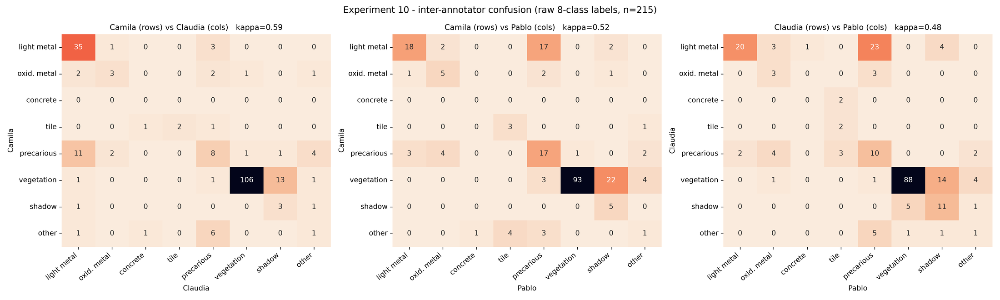
roofnet-eval/figures/inter_annotator_agreement.png| Method | Accuracy | macro-F1 | weighted-F1 | vegetation F1 | metal F1 |
|---|---|---|---|---|---|
| Spectral rules | 0.23 | 0.14 | 0.16 | 0.00 | 0.53 |
| CLIP ViT-L/14 (generic) | 0.64 | 0.37 | 0.64 | 0.80 | 0.72 |
| RemoteCLIP ViT-L/14 | 0.22 | 0.15 | 0.21 | 0.14 | 0.33 |
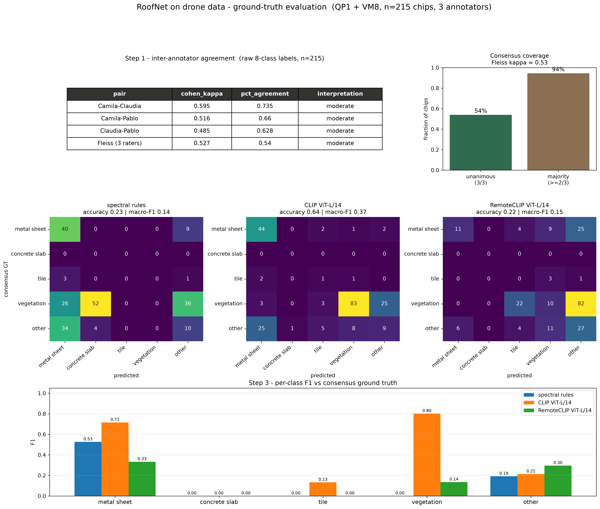
roofnet-eval/figures/sintesis_ground_truth.png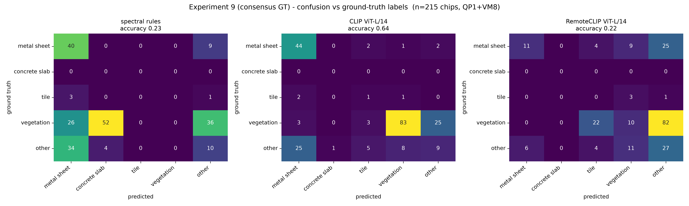
roofnet-eval/figures/confusion_matrices_gt.pngThese motivate a locally adapted taxonomy for Chilean informal settlements, with post-disaster classes.
Use each component where it is strong: a generic VLM to decide "is this a roof?" (CLIP vegetation F1 = 0.80), then the cheap, precise spectral rules for material on what passes the gate.
A fine-tuned RoofNet head, if obtained, slots into Stage 1 (and possibly Stage 2) and
should be re-benchmarked with exp9_gt_metrics.py.